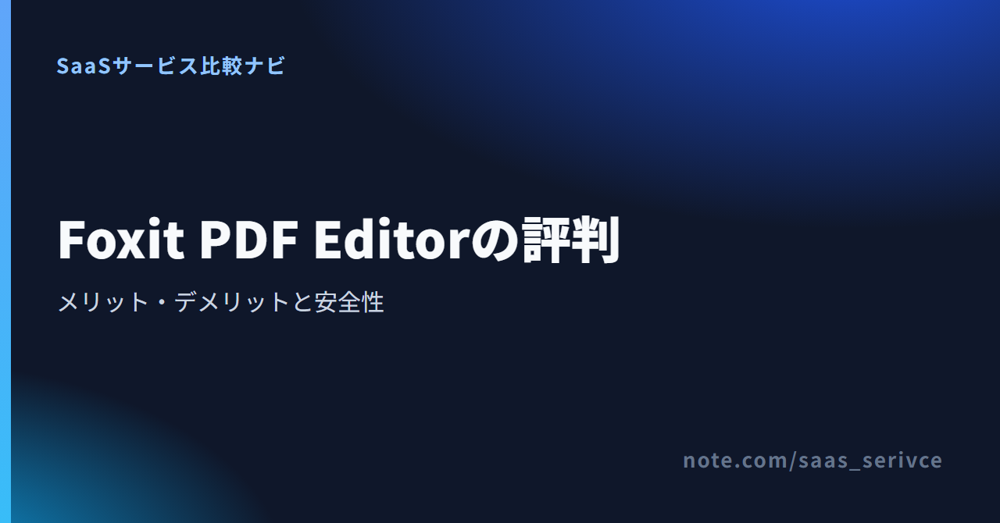

Foxitについて調べると、無料のFoxit PDF Readerと有料のFoxit PDF Editorの口コミが同じ検索結果に並びます。本記事では未契約のPDF Editorについて、公開レビューの評価と公式情報で確認できる現行仕様を分けて整理します。
Foxit PDF Editorは、PDFの編集機能を一通り試し、サブスクリプションと買い切り版の条件を比べたい人の候補です。 日本語の問い合わせ窓口もあります。ただし、OS間の細かな機能差や買い切り版のアップグレード条件まで確認せず、価格だけで決めるのは避けた方がよいでしょう。
公式ページでは、Editor+を14日間試してから契約を判断できます。閲覧や注釈が中心なら、まず無料Readerで足りるかを確認してください。
公開レビューでは編集機能や動作の軽快さが評価されています。ただし、投稿者ごとにOSやファイル条件が異なるため、性能保証とは捉えず、試用時の確認項目として受け取るのが妥当です。
日本語窓口は用意されていますが、購入元、製品、サポート契約によって対象が異なります。社内導入では、使うOSと契約経路を添えて問い合わせると確認点がぶれません。
PDFの閲覧、注釈、フォーム入力、署名が中心なら、無料のFoxit PDF Readerで足りる可能性があります。有料編集機能を試す14日間トライアルとは別の製品です。
公開レビューを見ると、編集作業をまとめられること、動作の軽快さ、Adobe Acrobat以外の選択肢になること、買い切りを選べることがFoxit PDF Editorの評価軸になっています。ここでは、利用者の感想と公式に確認できる製品条件を混同しません。
ITreviewのFoxit PDF Editor向けレビュー要約では、PDF編集と動作の軽快さが良い点として挙げられています。Editorへの投稿を集めたページなので、Readerとの取り違えを避けて評判を読めます。
一方、投稿には異なるOS、端末、バージョンが混在します。「Foxitなら常に軽い」と一般化せず、普段使うPDFで開く、編集する、保存するという一連の操作を確かめる材料にしてください。
ITreviewやFitGapなどの上位ページでは、Foxit PDF EditorはAdobe Acrobatの代替候補として扱われています。Foxit固有の判断材料は、Windows・macOS・Webへの対応、サブスクリプションと永続ライセンスの併売、Editor+のSmart RedactやeSign送信枠です。
ただし、「代替候補」は全機能が同じという意味ではありません。既存の業務手順、社内標準、共同作業、利用OSに必要な操作を洗い出してから比べる必要があります。
Foxit PDF Editorには年契約のプランと、Foxit PDF Editor 14の永続ライセンスがあります。契約形態を選べること自体は利点ですが、買い切り版の対象バージョン、将来のアップグレード、サポート、クラウド・AI機能の扱いは公開価格だけでは判断できません。
永続ライセンスは、必要期間の総額と必要機能を照合するための候補として考えるのが安全です。積極的に勧められる選択肢とは限りません。
不満を読むときは、現行PDF Editorへの評価か、古いFoxit Readerへの投稿かを切り分ける必要があります。製品名、バージョン、投稿時期、OS、ファイル条件が分からない声は、現行版の欠点として断定できません。
検索結果には「大きなPDFで重い」「安定しない」といった趣旨の声も見られますが、Readerの古い投稿を含み、OSやページ数、画像量まで特定できないものがあります。本記事では、これを現行PDF Editorの確定した不具合として扱いません。
画像の多い資料、長い報告書、スキャン文書を扱うなら、同じ形式のファイルで編集後の保存と再表示まで試す必要があります。
競合ベンダーの詳細レビューでは、多機能さに伴う学習負担が短所として挙げられています。競合側による評価であり、利用者レビューではありません。確認観点として読むべき内容です。
日本語表示に変更できることと、目的の機能を迷わず使えることも別です。閲覧と注釈だけならReader、既存PDFの内容変更が必要ならEditorという順に、必要範囲を先に絞れます。
PDF EditorはWindows・macOS・Web、Editor+はこれらに加えてiOS・Androidを対象にしています。公式情報ではプランごとの対応環境と追加機能までは確認できますが、5環境の機能差を網羅した現行資料は確認できません。対応OSだけを見て、同じ機能が使えるとは判断しない方がよいでしょう。
日本語の問い合わせはフォームとメールで受け付け、有償サポートチケットも案内されています。Foxit.com直販サブスクリプションがどの窓口・範囲の対象になるかは、購入元と製品によって異なります。
Foxit PDF Editorには文書保護と墨消しの仕組みがありますが、利用方法まで含めて「安全」と一括判定はできません。 暗号化、権限制御、墨消し、AIの処理経路を分けると、社内要件と照合できます。
Foxit公式は、128-bit／256-bit AES、文書を開くためのパスワード、印刷・コピー・編集を制限する権限パスワードを案内しています。Editor+のSmart Redactを含む墨消しは、適用後に対象内容を恒久的に削除する仕組みです。
画面上に黒い図形を重ねるだけでは墨消しになりません。社内文書では、保存後に検索やコピーで元情報を取り出せないことまで確認してください。
FoxitはAI処理をCloud、On-Device、Customの経路に分け、明示的な同意がない限り顧客データをモデル学習に使わないと説明しています。ただし、Cloud処理の保持期間や管理者設定は、契約や構成によって異なります。
社外秘や個人情報を含むPDFでは、利用する処理経路と契約条件を確認し、必要ならAI機能へ渡さない運用も決めておきます。
デスクトップ版、Web版、AI機能では、処理経路や保存先の確認点が同じとは限りません。利用する機能を先に決め、ローカル処理かクラウド処理か、共有データへ誰がアクセスできるかを構成ごとに確認してください。
Foxitの評判を読む前に、評価対象の製品を切り分けます。Readerの古い口コミを現行Editorの欠点として扱ったり、Editor+の追加機能を通常のEditorでも使えると思い込んだりすると、判断を誤ります。
Foxit PDF Readerは、閲覧、注釈、フォーム入力、署名に使える無料ソフトです。既存PDFの内容を編集する必要がなければ、Readerから検討できます。
PDF EditorはWindows・macOS・Webに対応します。Editor+はiOS・Androidも対象となり、Smart Redactと年間150件のeSign送信が含まれます。
対応環境は利用可否の入口です。モバイル対応や電子署名が必要かを確認し、その後に各OSで必要な機能を照合します。
電子契約を扱うFoxit eSignは、PDF Editorとは契約条件が異なります。eSignの決済方法、文書保管、サポート条件はPDF Editorへ流用できません。
電子契約が主目的なら、署名の送信数、相手側の操作、保管、監査証跡で専用サービスも比較してください。
日本向け料金ページは円表示ですが、US地域の公開定価も併記されています。円の単純換算と日本向け表示額は一致しないため、注文時は日本向け画面の価格を優先します。
為替で単純換算額は変動します。日本向けページでは適用税が別途とされており、税込の最終総額は注文画面で確認が必要です。30ライセンス以上には最大30%のボリューム割引があります。
サブスクリプションと永続ライセンスでは、支払回数だけでなく、対象バージョン、更新、サポート、クラウド・AI機能の扱いまで比べてください。
Foxit PDF Editor+の14日間トライアルはクレジットカード不要で、自動的に有料契約へ移行しません。Windows、macOS、Web、iOS、Androidから利用でき、AI Assistantは月300クレジットを含みます。終了後も無料Readerは使えますが、有料編集機能を継続できるわけではありません。
日本向け料金ページにはJCBとPayPalを含む決済ブランドが表示されています。一方、日本発行カード全般の受け入れは保証されていません。
個人購入者が請求書・領収書を取得する手順と、日本の適格請求書発行事業者番号は公式一次情報で確認できませんでした。必要な場合は、購入前に日本語窓口へ契約経路を添えて照会してください。消費税や経理処理は契約形態によって扱いが変わるため、税理士に確認します。
月払い、年契約・月払い、年払いのサブスクリプションは、解約するまで自動更新され、原則として取消・返金不可です。自動更新を止める方法として、申込時に自動更新のチェックを外す、購入後にFoxit customer portalから申請する、書面で申請する経路が案内されています。現行ポータル内のクリック手順までは公開されていません。
無料トライアルはカード不要で自動更新されません。有料契約へ進むときは、更新日と返金条件を別に確認してください。
Foxitを残すか別製品も試すかは、口コミの数だけに左右されず、利用環境、社内要件、契約条件を優先して決めます。電子契約が主目的なら、PDF編集ソフト同士の比較から離れることも必要です。
永続ライセンスを選ぶ場合は、対象バージョンと将来のアップグレード条件まで確認できたときに候補へ残します。
既存の業務手順がAdobe製品を前提にしている、社内標準が決まっている、OS間で同じ機能が必要といった場合は、Adobe Acrobatなども比較対象になります。
見るべきなのは単純な優劣ではありません。社内の受け渡し、共同作業、問い合わせ、管理方法まで含めて、変更の影響を許容できるかで判断します。
PDFの編集と、契約書の送付、署名状況の追跡・保管は別の業務です。Editor+のeSign送信枠だけで決めず、専用サービスの送信数、権限、保管、監査機能も比べてください。
製品区分と契約条件を混同しやすい疑問へ簡潔に答えます。
常設の無料版はReaderです。PDF Editor+は14日間だけ試用できます。
日本語サイトと日本語版の導線があり、多言語版では表示言語を変更できます。日本語の問い合わせ窓口もありますが、購入元・製品・サポート契約で対象が異なります。
128-bit／256-bit AES、権限パスワード、適用後に内容を恒久削除する墨消しが用意されています。AI機能は処理経路と契約条件を別途確認してください。
カード不要の14日間トライアルは自動課金されません。購入後のサブスクリプションは自動更新です。
Foxit PDF Editorは、編集機能と契約形態に魅力がある一方、OSごとの必要機能や買い切り版の権利差を自分で照合して選ぶ製品です。 公開レビューは候補を絞る材料にし、契約判断は現行仕様と注文条件で行います。
普段のPDFで編集と保存を試し、利用OS、日本語窓口の対象、AIの処理経路、支払い、自動更新・返金条件を確認してください。Reader、Editor、Editor+の違いは製品選びの段階で一度整理すれば十分です。
14日間トライアルで必要な操作を試し、日本向け表示価格と契約条件を読んだうえで判断できます。